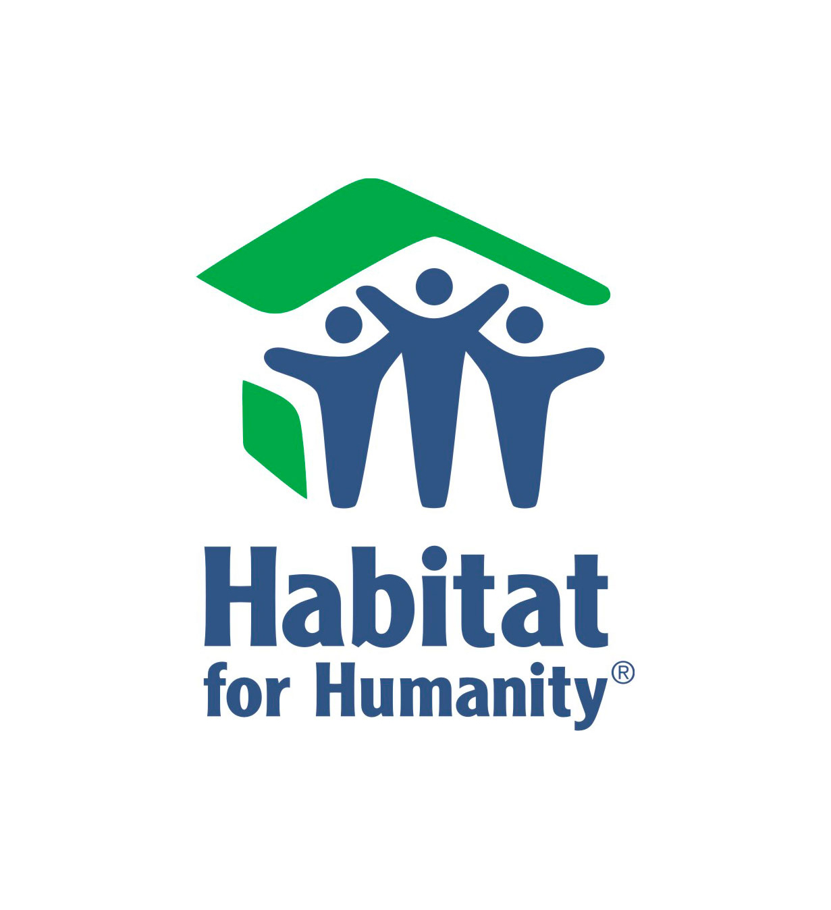

<ion-header>
  <ion-navbar>
    <ion-title>Community Plus</ion-title>
  </ion-navbar>
</ion-header>

<ion-content padding>
    <ion-content class="background">
  <h2>Welcome! This is a page of oppurtunties....!</h2>
        
        
<button type="button">.
    <br>
    <a href="https://www.googleadservices.com/pagead/aclk?sa=L&ai=DChcSEwjF_v2ItJPVAhWHPYEKHR5rAj0YABABGgJ5dw&ohost=www.google.com&cid=CAESEeD24ZNHpMqfyxg4OOMSWmQS&sig=AOD64_3nakSMo89lXAQKvqWACncHEUZO3Q&q=&ved=0ahUKEwi7sPaItJPVAhXDdSYKHQcnA54Q0QwIKw&adurl=">Habitat for Humanity
    </a>– Is a donation- based retail store. Volunteers help with the customer service, store organization.  This Friday from 11:00am to 2pm at their Atlanta location learn more….</button>
        <br>

        <button type="button">
            <br>
            <a href="https://www.google.com/url?sa=t&rct=j&q=&esrc=s&source=web&cd=1&cad=rja&uact=8&sqi=2&ved=0ahUKEwipxcOKtpPVAhVG5YMKHX9xCdMQFghBMAA&url=http%3A%2F%2Fwww.salvationarmyusa.org%2F&usg=AFQjCNGeVj1CjuJV64OQBJNp4E61aIB7iw">The Salvation Army </a>
            - an organization that with an international movement, religious based and meeting the needs for those in need such as food, clothes and care.</button>
 
        <button type="button">
            <br>
            <a href="www.cancer.org/donate"> American Cancer Society

            ></a>
            --an organization that helps cancer paitients and help with circustances with these disease such as research, support and spreading word about prevention.</button>    
        
        <button type="button">
            <br>
            <a href="https://www.choa.org/">
            Children's Healthcare of Atlanta
            </a>
            -- an hospital here in Atlanta making a change to children attended in thier hospital.Always helping raising funds for research for children.</button>
        
  <button type="button">
      <br>
      <a href="https://www.booksforafrica.org/"> Books for  Africa    

      </a>
      -- an organization that simply helps with as mission to giver every child in Africa an opportunity to have a book to make a dream come true.Helping create a increasing a literacy rate and empowerment.
        </button>
    
    <button type="button">
        <br>
        <a href="http://acfb.org/">Atlanta Community Food Bank
        </a>
        -- an organzation with a mission to  dirtibute over 600 million meals to 29 coutnies across Georgia.Also working with other nonprofit partners.Distributing pantry to different communities.
            </button>
  <button type="button"> Here are some other inquiries      
        </button> 
        
  
</ion-content>    
</ion-content>
